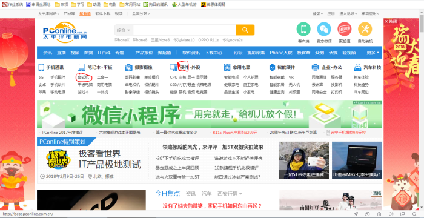
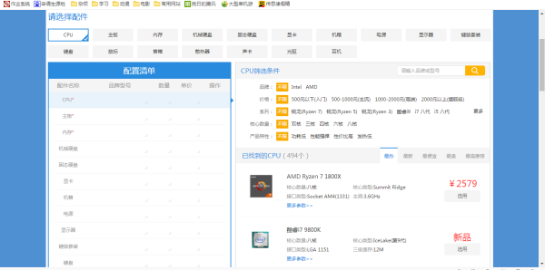

1.发展史
计算机最初起源于十九世纪的英国，当时有一些科学家想发明一种机器能够代替人的思考，但由于技术条件的限制没有成功。
第一台计算机是诞生在美国的宾夕法尼亚大学，时间1946年2月15日，这台计算机重30t、占地170平方、含1800个电子管、每秒能进行5000次运算。
计算机元器件发展经过电子管、晶体管、集成电路、大规模集成电路、超大规模集成电路这几个阶段，使用电子管的称为第一代计算机，使用晶体管的称为二代
计算机，使用集成电路(IC)和大规模集成电路的称为第三代计算机，现在是使用超大规模集成电路的第四代计算机。超大规模集成电路能够容纳的元器件数目是
非常恐怖的，一块指甲大小的芯片可以容纳几十亿个元器件，所以，现在我们接触的电脑体积大多比较小巧。
现在使用最多的是微型计算机,也称为PC机,即个人计算机。
2.类型
在短短几十年间，随着技术的变革，计算机有了翻天覆地的变化。
个人计算机的类型:台式个人电脑、笔记本电脑、其他便携式计算机
台式个人电脑:主要放置在某一地点，不能移动，它的主机、键盘、显示器都是相互独立的，通过电缆和插头连接在一起。特点是体积大、价格便宜、部件标准
化程度高、易于扩展、维护维修方便。台式机是可以自己动手组装的机型，也是目前使用最多的结构形式，适合在固定的场所使用。
笔记本电脑:笔记本电脑的主机、键盘、硬盘驱动器、显示器等部件都是组装在一起的，体积只有手提包大小，并且有电池供电，可以实现移动办公。
其它便携式计算机:2002年微软推出平板计算机(Tablet PC)后，其它厂商也纷纷推出自己的平板计算机，它被称为未来的发展方向。紧接着2010年1月苹果
公司推出Ipad，掀起了平板电脑的热潮。它比笔记本电脑更加便携，并且采用触摸键盘，而且还可以用来打电话等，但在性能和功能上与笔记本相比还有不小
的差距，所以目前的主流还是台式机和笔记本。
3.系统组成
计算机系统包括硬件系统和软件系统。
计算机的硬件指看的见、摸得着的实际物理设备，这些部件和设备按照计算机系统结构的要求构成一个有机整体，称为计算机硬件系统。
计算机的软件是指为了运行、维护、管理计算机系统而编制的各种程序的总和，软件一般分为系统软件和应用软件，系统软件通常由计算机的设计者或专门的软
件公司提供，包括操作系统、计算机监控管理程序、编译器等。
1.初步认识硬件组成
从外观上看，一个台式机包括主机、显示器、键盘、鼠标，但实际上重要的部件都包含在主机箱内。
主机是安装在一个主机箱内的所有部件的统一体，其中除了功能意义上的主机以外，还包括电源和若干构成系统所必不可少的外部设备和接口部件。其中主要的三
大部件是主板、CPU、内存条。
主板:主板是主机内最大的那块电路板,其上分布着各种插槽和借口，各种部件和设备通过它来相互连接，相当于电脑的躯干。
CPU:是计算机的核心部件，相当于计算机的大脑，负责整个计算机的大部分运算和控制，CPU的性能好坏直接影响到电脑的性能高低，形状一般是方块状。
内存条:用来临时存放数据，是一块细长型的电路板。
2.外部存储设备、功能扩展卡、其他设备
除三大部件外，是外部存储设备,主要就是硬盘驱动器(硬盘)，当然还包括U盘等。硬盘一旦受到损伤，就容易造成数据丢失。
其次，是各种功能扩展卡，也叫适配器，它们可以安装在主板的插槽上边，用来扩展、增强计算机的功能。常见的适配器有显卡、声卡、网卡、电视卡等。
显卡:用于处理各种图形、3D画面的运算处理，并且提供连接显示器的接口。它的运算核心是GPU(图形处理器)，与CPU类似，只是GPU是专为执行复杂的数学和
几何运算而设计的，这些计算是图形渲染所必需的，某些高性能的GPU上集成的晶体管数甚至超过了普通CPU，GPU会产生大量热量，所以其上通常装有散热器或
风扇。
剩下的就是机箱、电源、显示器、鼠标和键盘、音响和耳塞等。
电源:电源上一般有风扇散热，其次还有很多接口用于给CUP、主板、显卡等供电。
显示器:显示器主要分CRT(显像管)显示器、等离子(PDP)显示器、液晶(LCD)显示器。
1.选择笔记本还是台式机？
笔记本和台式机的结构组成其实是类似的，笔记本相对于台式机最大的也是唯一的优势就是便携可充电。
但相比台式机，同样的性能下笔记本要比台式机贵很多很多，所以，如果追求性价比或者对显示器和计算机处理速度要求比较高的用户(特别是图形设计方面的从
业人员)，建议买台式机。
其实一般来说，还是尽量买台式机，除非要经常携带电脑或者电脑小白建议选笔记本。(笔记本相对台式机不容易出毛病)。
2.选择品牌机还是组装机？
品牌机和组装机是对台式机而言的，笔记本电脑由于兼顾体积、各部件通用性低，无法任意装配，只能由电脑生产商整体设计生产。
品牌机指整台计算机由大型计算机生产商进行设计装配，整体进行销售的计算机。例如国内的联想、海尔、神州等;国外的DELL(戴尔)、IBM、HP(惠普)等
组装机指部件由用户按照自己的需求进行搭配、采购，然后自己或委托电脑城进行安装调试的计算机。购买组装机需要用户具有一定的硬件知识，采购部件主要
包括显示器、鼠标和键盘、机箱、主板、CPU、内存条、显卡声卡网卡、电源、硬盘、音箱或耳机。
3.品牌机和组装机各自的优缺点
品牌机:质量和稳定性相对要高一些，因为它们是大的生产商经过长时间测试、磨合过后才进行批量生产，所以质量和稳定性有保障，此外，品牌机也有其对应的
售后服务保证，但维修成本比较高，还有，因为是整体销售，品牌机的显示器性能很一般(因为通常显示器不受重视)，特别是一些低端产品。所以，相对组装机
而言品牌机性价比低。
组装机:组装机的主要优势是性价比高，同样的钱组装机性能要比品牌机高很多，其次它可以自由选购自己喜欢的部件，自己维护。但由于部件是自由搭配的，就
要考虑计算机各部件的互相兼容(即稳定性)以及销售商的售后服务。所以选购组装机各部件时需要具有一定的计算机硬件知识和技巧。
所以，对计算机不是很熟悉，经济宽裕的用户可以选购品牌机。而希望深入了解计算机，追求性价比的用户，可以尝试组装机。
4.购买组装机
可以去太平洋电脑网(www.pconline.com.cn)，是国内知名网站，一个大型IT设备信息平台。主页如图:

如果是选购品牌机，就进入台式机页面。如果是组装机，就点击硬件，在里边可以选购各种部件，在硬件页面的右侧，还能够找到“自助装机”这一选项，里边可
以按照自己的要求配置部件，最后自动生成总价格。如下:

在京东，淘宝上还能够看到一些DIY主机，是近些年兴起的电商的组装机，专为懂一些硬件但并不精通的小白准备，购买其要慎重，因为经常有电商为了降低成本
在电源、主板上做猫腻，这就不仅是性能问题了，更关乎安全问题，可参考这篇文章:http://diy.pconline.com.cn/1032/10321584.html